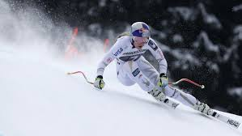
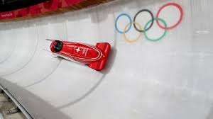

Events & Athletes

Alpine Skiing
Alpine skiing is the backbone of the Winter Olympics and the discipline that draws the biggest television audiences outside of figure skating. Events include the downhill, super-G, giant slalom, slalom, and combined. Athletes race down steep mountain courses at speeds exceeding 80 miles per hour in the downhill, leaning into icy turns with razor-thin margins for error.
Legends of the sport include Austrian Toni Sailer, American Bode Miller, and Swiss icon Didier Cuche. In recent years, Mikaela Shiffrin of the United States has rewritten the record books, becoming the most decorated Alpine ski racer in World Cup history. Skiing events make up the largest share of Winter Olympic medals, and no Games would feel complete without the roar of the downhill crowd.
Figure & Speed Skating
Skating events draw some of the largest television audiences at the Winter Olympics. Figure skating — including singles, pairs, ice dance, and the team event — blends athleticism with artistic expression and is often among the most talked-about competitions of the Games. Judges score based on technical elements and program components such as transitions, performance, and interpretation.
Speed skating takes place on a 400-meter oval where athletes race in pairs against the clock, while short track speed skating is contested on a smaller 111-meter surface in tightly packed group heats. American Apolo Anton Ohno became a household name through his dramatic short track runs, while Dutch speed skater Sven Kramer dominated long track racing for over a decade.

Bobsled & Luge
Bobsled teams of two or four athletes pilot a sleek sled down a twisting ice track, reaching speeds above 90 mph. Races are decided by hundredths of a second. The driver steers with two rings connected to the front runners, while brakeman strategy and the explosive push-off at the start can make or break a run.
Luge athletes lie on their backs and steer with subtle leg pressure and shoulder shifts, hurtling feet-first through banked turns. Skeleton is the daring cousin of luge — athletes race head-first, face-down, relying on pure courage and body positioning. All three sliding events share the same iced track and deliver some of the most heart-pounding moments of the Winter Games.
Ice Hockey
Olympic ice hockey has produced some of the most memorable moments in sports history. The 1980 "Miracle on Ice," when the United States amateur squad defeated the heavily favored Soviet Union at Lake Placid, remains one of the greatest upsets ever recorded. Women's hockey was added to the program at the 1998 Nagano Games, and Canada and the United States have dominated the women's competition ever since.
The men's tournament features the world's best national teams competing in a round-robin format leading to knockout rounds. When NHL players have been allowed to participate, the Games have attracted global superstars. The combination of national pride, physical play, and high-skill hockey makes Olympic ice hockey must-watch television for fans around the world.
All Winter Olympic Sports
The Winter Olympics currently features over 100 events spread across 15 disciplines, grouped into seven broad sport categories: biathlon, bobsled, curling, ice hockey, luge, skating, and skiing. Each discipline demands a unique combination of physical and mental skills.
Cross-Country & Biathlon
Cross-country events reward endurance athletes who glide for distances up to 50 kilometers. Biathlon uniquely combines cross-country skiing with rifle marksmanship — athletes must slow their racing heart rate enough to hit small targets after sprinting. It is one of the most physically and mentally demanding sports at the Games.
Curling
Curling, sometimes called "chess on ice," requires teams of four to slide polished granite stones toward a target. Sweeping the ice in front of a stone affects its speed and curl. Strategy, teamwork, and precision are the hallmarks of a great curling squad. The sport has grown enormously in popularity since its return to the Olympics in 1998.
Legendary Athletes
The Winter Olympics have produced legendary competitors across every generation. Norwegian biathlete Ole Einar Bjørndalen won a record 13 Olympic medals over the course of his career. American snowboarder Shaun White became a household name with back-to-back-to-back halfpipe gold medals. Norwegian cross-country skier Marit Bjørgen retired as the most decorated Winter Olympian of all time with 15 medals.
The New Generation
Today, a new generation of athletes is pushing the limits even further, with young competitors from countries like China, South Korea, and the United States redefining what is possible in sports like freestyle skiing and short track. These athletes bring innovation, creativity, and incredible dedication to their disciplines, inspiring millions of fans worldwide.
Training and Dedication
The path to Olympic success requires years of intense training, often beginning in childhood. Athletes must balance physical conditioning with technical skill development, mental preparation, and tactical awareness. Many train year-round at specialized facilities, working with coaches, nutritionists, and sports psychologists to optimize their performance.